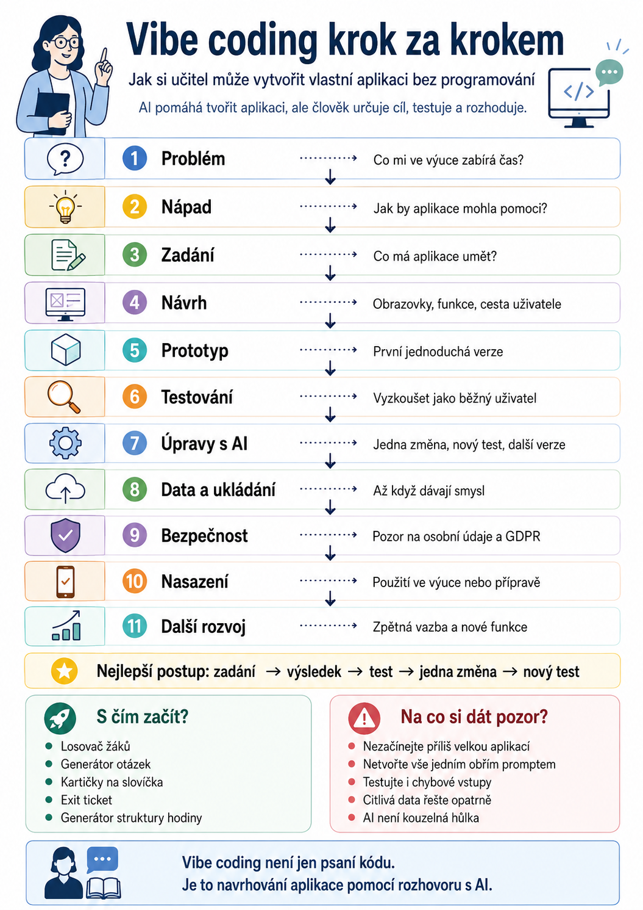

Vibe coding je způsob tvorby aplikací, při kterém nemusíte začínat učením programovacího jazyka.
Místo ručního psaní každého řádku kódu popisujete umělé inteligenci, co má aplikace dělat, jak má vypadat a jak se má chovat. AI potom navrhuje strukturu, vytváří kód a pomáhá s opravami.
Pro učitele je to zajímavé hlavně proto, že při tvorbě aplikace využívá dovednosti, které už běžně používá: plánování, formulování zadání, testování, úpravy podle výsledku a přemýšlení nad tím, co bude pro uživatele skutečně praktické.
Vibe coding ale není kouzelné tlačítko „Vytvoř aplikaci“. Nejlépe funguje jako opakovaný pracovní cyklus.

Celý workflow ve zkratce
Nemusíte všechny kroky řešit hned. U první jednoduché aplikace často stačí vytvořit základní funkční verzi a postupně ji rozšiřovat.
1. Začněte problémem, ne aplikací
Nejdříve si položte otázku:
Co mi ve výuce nebo při přípravě zabírá čas a šlo by to zjednodušit?
Například:
- příprava pracovních listů,
- generování otázek k textu,
- náhodné rozdělování žáků do skupin,
- procvičování slovní zásoby,
- tvorba kartiček,
- příprava krátkých testů,
- plánování vyučovací hodiny,
- jednoduché procvičovací hry.
Místo zadání:
Vytvoř mi aplikaci pro učitele.
je mnohem lepší říct:
Vytvoř jednoduchou aplikaci, ve které učitel zadá téma hodiny, ročník a délku hodiny a aplikace vytvoří návrh 45minutové vyučovací hodiny.
Čím přesněji problém popíšete, tím použitelnější bude výsledek.
2. Popište, co má aplikace umět
Ještě před samotným programováním si připravte jednoduché zadání.
Stačí odpovědět na několik otázek:
- Kdo bude aplikaci používat?
- Co do ní uživatel zadá?
- Co má aplikace vytvořit?
- Jaké funkce jsou opravdu nutné?
- Co zatím můžeme vynechat?
Například:
Uživatel zadá:
• předmět,
• třídu,
• téma,
• délku hodiny,
• úroveň žáků.
Aplikace vytvoří:
• cíl hodiny,
• časový plán,
• úvodní aktivitu,
• hlavní úkol,
• závěrečné ověření.
Pro první verzi je lepší mít pět dobře fungujících funkcí než dvacet rozpracovaných.
3. Nechte AI navrhnout workflow aplikace
Než necháte AI programovat, můžete ji požádat, aby nejdříve navrhla samotnou strukturu.
Například:
Navrhni jednoduchou webovou aplikaci podle tohoto zadání. Nejdříve popiš jednotlivé obrazovky, funkce a cestu uživatele aplikací. Zatím nepiš kód.
Výsledkem může být například:
Tento krok je velmi užitečný. Často už při něm zjistíte, že některá část aplikace chybí nebo je zbytečně složitá.
4. Vytvořte první jednoduchý prototyp
Teď přichází samotný vibe coding.
Můžete použít nástroj, který dokáže z běžného textového zadání vytvořit webovou aplikaci nebo její kód.
Pro první pokus je dobré AI říct:
Vytvoř funkční prototyp této aplikace. Začni co nejjednodušší verzí. Zatím bez přihlašování, databáze a dalších pokročilých funkcí.
První verze nemusí být krásná ani dokonalá.
Jejím cílem je zjistit:
Funguje vůbec náš nápad?
5. Testujte jako běžný uživatel
Jakmile aplikace vznikne, začněte ji používat.
- Klikněte na všechna tlačítka.
- Vyplňujte pole.
- Zadávejte nesmyslné hodnoty.
- Nechte některá pole prázdná.
- Vyzkoušejte aplikaci na telefonu.
Právě při používání většinou rychle zjistíte, co je potřeba změnit.
Například:
Přidej možnost zvolit délku hodiny 45 nebo 90 minut.
Výstup je příliš dlouhý. Zkrať jej.
Pokud uživatel nevyplní téma, zobraz upozornění.
Toto je základní princip vibe codingu.
6. Pracujte v krátkých cyklech
Nesnažte se vytvořit celou aplikaci jedním obrovským promptem.
Mnohem lépe funguje tento postup:
Například:
- vytvoř formulář,
- vyzkoušej ho,
- uprav vzhled,
- vyzkoušej,
- přidej další funkci,
- znovu testuj.
Čím větší změny zadáváte najednou, tím větší je riziko, že AI opraví jednu věc a rozbije tři další.
7. Teprve potom řešte ukládání dat
Spousta prvních učitelských aplikací databázi vůbec nepotřebuje.
Pokud ale chcete například ukládat:
- vytvořené přípravy,
- seznamy tříd,
- nastavení,
- výsledky,
- uživatelské účty,
budete potřebovat úložiště nebo databázi.
Tady už začíná být aplikace technicky složitější.
Proto je dobré nejdříve ověřit, že základní aplikace opravdu dává smysl.
8. Pokud má aplikace používat AI, přidejte ji až jako další vrstvu
Vibe coding a AI aplikace nejsou totéž.
Vibe coding znamená, že vám AI pomáhá aplikaci vytvořit.
AI aplikace znamená, že samotná vytvořená aplikace používá nějaký AI model.
Například generátor přípravy hodiny může fungovat takto:
V takovém případě je potřeba řešit také například API, cenu používání modelu a bezpečné uložení přístupových klíčů.
Pro první aplikaci to ale vůbec nemusí být nutné.
9. Myslete na bezpečnost
U jednoduché aplikace na procvičování slovíček není bezpečnost příliš složitá.
Situace se ale výrazně mění ve chvíli, kdy aplikace pracuje například s:
- jmény žáků,
- známkami,
- docházkou,
- podpůrnými opatřeními,
- osobními údaji.
Takovou aplikaci není dobré vytvářet stylem:
Nějak tam přidej databázi a zabezpečení.
Je potřeba řešit přístupová práva, způsob ukládání dat, přihlášení uživatelů, ochranu přístupových klíčů a GDPR.
Pro začátek proto doporučuji vytvářet aplikace, které pracují s anonymními nebo neosobními daty.
10. Vyzkoušejte aplikaci v reálném prostředí
Když už aplikace funguje, použijte ji při skutečné přípravě nebo ve výuce.
Teprve tady často zjistíte věci, které při vývoji vůbec nebyly vidět.
Například:
- žáci nevědí, kam kliknout,
- text je na mobilu příliš malý,
- učitel potřebuje jiný typ exportu,
- jedna funkce je zbytečná,
- chybí jednoduché tlačítko Reset.
Reálné používání je nejlepší test.
11. Aplikaci postupně rozšiřujte
Dobrá aplikace většinou nevznikne během jednoho večera.
Vzniká postupně:
Můžete například postupně přidat:
- export do PDF,
- ukládání výsledků,
- více typů aktivit,
- vlastní šablony,
- AI generování,
- uživatelské účty,
- přístup z mobilu.
Tím se z jednoduchého prototypu může postupně stát skutečný pracovní nástroj.
Doporučený postup pro první učitelskou aplikaci
Pokud s vibe codingem začínáte, držte se jednoduchého pravidla:
Nezačínejte školním informačním systémem.
Vytvořte něco malého, například:
- losovač žáků,
- generátor otázek,
- kartičky na slovíčka,
- časovač aktivit,
- generátor exit ticketů,
- jednoduchý kvíz,
- generátor struktury vyučovací hodiny.
Na takovém projektu se naučíte celý proces bez toho, abyste se utopili v databázích, přihlášení a bezpečnosti.
Co je při vibe codingu úkolem učitele?
AI může napsat kód.
To ale neznamená, že rozhoduje o aplikaci.
Úkolem člověka zůstává:
- správně popsat problém,
- rozhodnout, co aplikace potřebuje,
- kontrolovat výsledek,
- testovat,
- hledat chyby,
- rozhodovat o dalších úpravách.
Proto je možná přesnější chápat vibe coding ne jako „programování bez programování“, ale jako navrhování aplikací pomocí konverzace s AI.
A právě v tom může mít učitel překvapivou výhodu.
Učitel totiž celý pracovní den vytváří zadání, plánuje proces, sleduje výsledky a podle nich mění další postup.
To je vlastně velmi podobný způsob práce.
Jednoduché pravidlo na závěr
Při prvním projektu si pamatujte:
Vibe coding není o tom vytvořit vše na první pokus.
Je to proces, ve kterém se aplikace postupně zpřesňuje, dokud nezačne opravdu řešit problém, kvůli kterému jste ji začali vytvářet.